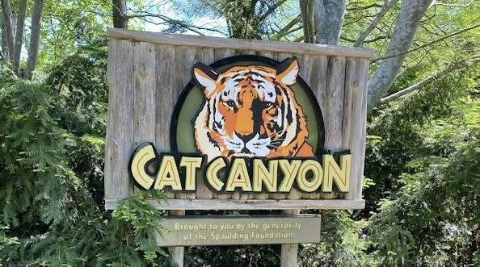

Cat Canyon
Cincinnati Zoo & Botanical Garden · Photo Tour #12

Photo Tours #12, Cat Canyon-Cincinnati Zoo & Botanical Garden, In this Historical Zoo there was a time when there 3 enclosures as formerly known as the Tiger & Lion Grottos from the early 1930's but later on it was renamed the Tiger Canyon which I did a Glimpse of it myself during my first 3 Visits to Cincinnati which had a one of them occupied by one of the big cats were about to see, along with one of them was occupied by a African painted dog one time and then some other time in that same exhibit cheetahs were also in there & then the final one was for White Bengal Tigers,
The Grottos lasted for over 75 Years Until 2012 as part of Phase 2 of the Project that also includes the Night Hunters Building which I did mentioned this on our last Cincinnati Photo Tour & we will continue right where we left off from Night Hunters,
As soon as you leave the building you will find the first enclosure for Mountain Lion Brothers Tecumseh & Jospeh that came to the zoo in 2010 and came to their enclosure in 2011 which this enclosure was built after Night Hunters & Before Cat Canyon,
as you continue down the forest you will find the next enclosure which was the former home of their White Bengal Tigers which lived in Cat Canyon for several years until passing away in 2017 & 2018, as of today this enclosure and the next enclosure are for the Zoo's 2 Malayan Tigers, Male-Zero & Female-Jin that helps out not only for Malayan Tiger conservation but to cheer on for the Cincinnati Bengals,
as you leave Tiger Territory, you could take a path to the left to find a small enclosure that was added somewhere between 2020 and 2021 which now contains the beautiful Eurasian Eagle-Owl which was actually first displayed in Night Hunters,
continuing the mountains of Asia which in the very last enclosure is Home to Snow Leopards Renji & Nubo which even though i'm really late for World Snow Leopard Day, I do want to make one cool fact about them, even though they look and have the word leopard in their name, these guys are actually more closely related to tigers than to actual leopards, after the snow leopards you take the boardwalk back up the path and continue your journey at the Cincinnati Zoo.
Louie posted this on Facebook — open the original post →